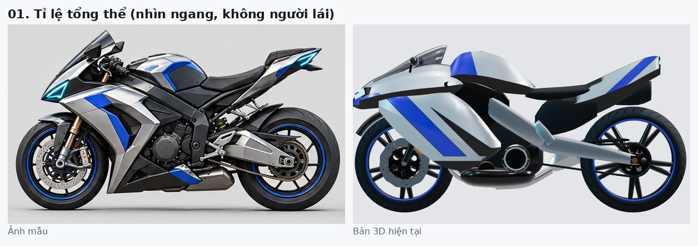

Tỉ lệ tổng thể
Ngang, không người láiƯu tiên cao
- Ảnh mẫu
- Đầu xe cao và ngắn, mũi nhọn chúc xuống. Kính dựng đứng, cao. Bình xăng cao, gù lên. Yên dài nằm ngang. Đuôi mảnh, vút cao, đầu nhọn.
- Bản 3D hiện tại
- Đầu xe dài và thấp như mỏ chim. Ốp sườn phồng thành khối. Đuôi dày, phẳng. Khoảng trống lớn dưới yên.
- Hướng sửa
- Nâng mũi khoảng 8 cm và rút ngắn khoảng 10 cm. Kính cao thêm khoảng 10 cm, dựng đứng hơn. Nâng bình xăng khoảng 5 cm. Thu mảnh đuôi, đầu đuôi lên khoảng 1,0 m.